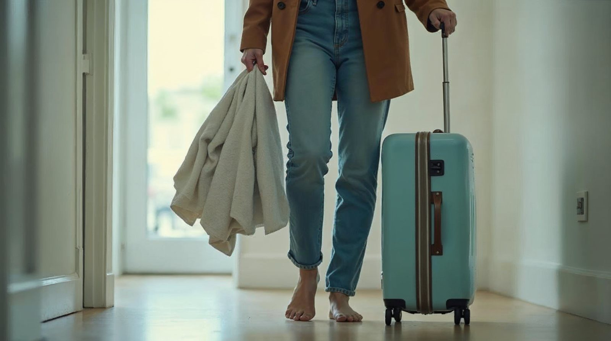
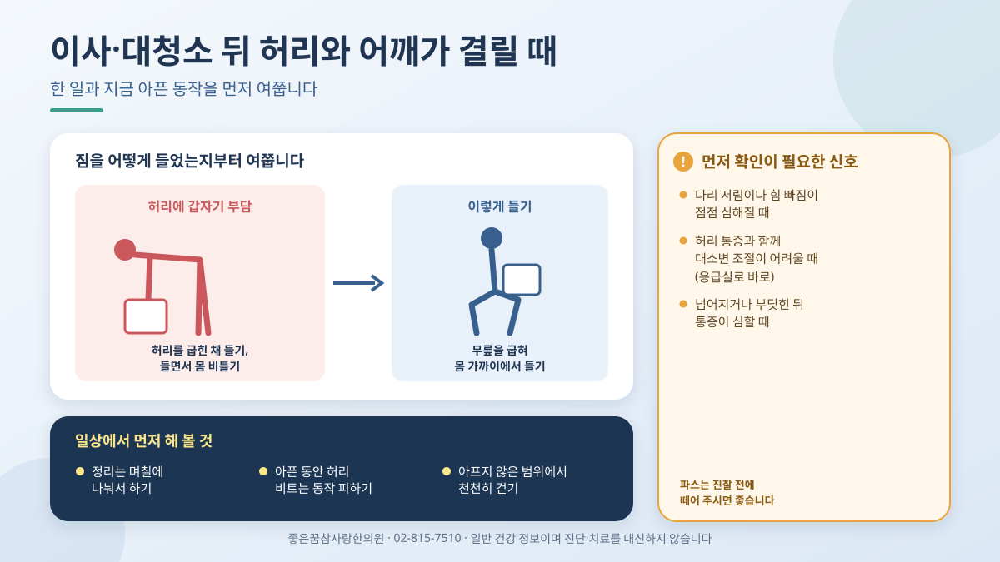

이종호 한의사 감수좋은꿈참사랑한의원 대표원장 (한의사 면허번호 19769)발행 2026-11-23 · 수정 2026-11-25
이 글의 차례
이사나 대청소를 마친 뒤 허리와 어깨가 결려 몸을 일으키기도 힘드시다면, 저는 어떤 짐을 어떻게 들었는지, 지금 어떤 동작이 아픈지를 먼저 여쭙고 척추와 어깨의 균형을 함께 살핍니다. 그보다 앞서 꼭 확인하는 것이 있습니다. 다리로 뻗치는 저림이나 힘 빠짐, 대소변 문제처럼 추나보다 다른 확인이 먼저 필요한 신호가 없는지입니다.
넘어지거나 부딪힌 뒤 통증이 심하다면 뼈 쪽 확인이 먼저일 수 있습니다.
이삿날 아침 7시, 아직 어둑한데 현관문은 활짝 열려 있습니다. 며칠 밤을 새워 싼 상자들이 거실을 가득 메우고, 테이프 뜯는 소리가 하루 종일 이어집니다. 짐을 내보내고, 새집에 들어와서는 장롱 위로 이불을 올리고 싱크대 아래로 냄비를 밀어 넣습니다. 그날 밤은 너무 지쳐서 아픈 줄도 모르고 쓰러져 잡니다.
문제는 다음 날 아침입니다. 몸을 일으키려는데 허리가 뻣뻣하게 굳어, 옆으로 돌아누운 다음에야 겨우 일어납니다. 세수하려고 허리를 숙이니 찌릿하고, 머리를 감으려 팔을 드니 어깨 뒤가 결립니다. 아직 풀지 못한 상자는 산더미인데 말이지요.
진료실에서 이런 말씀을 자주 듣습니다. 이사하고 나서 허리를 못 펴겠다고, 대청소 한 번 했을 뿐인데 어깨가 안 올라간다고요. 그리고 거의 빠짐없이 이런 말이 따라옵니다. 정리할 게 아직 많은데 이러고 있으면 안 되는데, 하고요.
저는 그 조급한 마음을 잘 압니다. 새 공간을 하루빨리 사람 사는 집으로 만들고 싶은 마음, 쉬고 있으면 일이 그대로 쌓여 있는 것 같은 마음이지요. 그런데 며칠 사이에 평소 몇 달치 힘을 몰아서 쓰셨으니 몸이 놀라는 것도 무리가 아닙니다. 그동안 정말 애쓰셨습니다.
왜 며칠 몰아 쓴 몸은 뒤늦게 아플까요
허리를 굽힌 채 무거운 상자를 들어 올리거나, 들면서 몸을 비틀면 허리 근육과 인대에 갑자기 큰 부담이 걸립니다. 상자가 몸에서 멀수록 허리가 받는 부담은 더 커집니다. 이삿날에는 이런 동작을 하루에 수십 번 되풀이합니다. 평소라면 한 달에 한 번 할까 말까 한 동작들이지요.
평소 잘 쓰지 않던 근육을 하루에 몰아서 쓰면, 그날보다 다음 날이나 이틀 뒤에 뻐근함이 더 심해지기도 합니다. 이사 다음 날 아침 유난히 몸이 굳어 있는 것도 그래서입니다. 이런 뻐근함은 며칠에 걸쳐 조금씩 풀리는 경우가 많습니다. 다만 날이 갈수록 오히려 심해진다면 근육 뭉침만은 아닐 수 있습니다.
어깨는 높은 곳에서 탈이 납니다. 장롱 위에 이불을 올리고, 수납장 꼭대기 칸을 정리하고, 커튼을 떼어 다는 동안 팔은 머리 위에 오래 머뭅니다. 그러면 어깨 뒤와 목, 옆구리까지 함께 결립니다. 무거운 것을 머리 위로 올리다 어깨 앞쪽이 찌릿했다면 힘줄 쪽도 살펴볼 필요가 있습니다.
바닥 일도 만만치 않습니다. 쪼그려 앉아 상자를 풀고, 무릎을 꿇고 걸레질을 하고, 다시 일어나는 일을 되풀이하면 허리와 무릎이 같이 지칩니다. 여기에 몸의 사정이 겹칩니다. 이사 전 며칠은 짐을 싸느라 잠이 모자라고 끼니는 대충 때우고, 새집에서의 첫 밤은 낯설어 잠이 얕습니다.
잠이 부족하면 같은 통증도 더 크게 느껴지고, 몸이 하루치 피로를 풀 시간도 줄어듭니다. 통증 때문에 잠을 설치고, 잠을 설쳐서 통증이 더 심해지는 고리가 생기기 쉽습니다. 그래서 저는 잠에서 깬 뒤에 아픈지, 아파서 잠이 깨는지를 꼭 여쭙습니다. 비슷해 보여도 밤에 겪는 일은 다르기 때문입니다.
그렇다고 모든 허리 통증이 근육 뭉침은 아닙니다. 기침이나 재채기를 할 때 허리가 울리고 다리 쪽으로 저린 느낌이 내려간다면 신경 쪽 문제일 가능성도 있어 먼저 확인이 필요합니다. 영상 검사에서 디스크가 보인다는 말을 들으면 덜컥 겁이 나기도 하는데, 사진에 보이는 모습과 실제로 느끼는 통증은 늘 같지는 않습니다.
그래서 저는 사진과 함께 언제, 어떤 자세에서 아픈지, 다리로 저림이 내려가는지, 힘이 빠지지는 않는지를 함께 봅니다.
이런 분들을 자주 뵙습니다
이사는 업체에 맡겼지만 새집 정리는 직접 하신 분들이 많습니다. 짐을 옮기는 건 하루였는데, 상자를 풀고 제자리를 찾아 주는 데는 일주일이 걸립니다. 그동안 바닥에 앉았다 일어서기를 셀 수 없이 되풀이하지요. 이런 분께는 상자를 바닥 대신 식탁이나 의자 위에 올려놓고 풀어 보시라고 권하는데, 허리를 숙이는 횟수가 눈에 띄게 줄어듭니다.
원룸 이사를 친구와 둘이서 직접 하신 분들도 자주 뵙습니다. 계단으로 냉장고나 세탁기를 옮기다가 허리가 뜨끔했다는 이야기를 종종 듣습니다. 젊고 힘이 있으니 괜찮겠지 했는데 다음 날 일어나지 못하는 경우도 있습니다. 큰 짐은 무리해서 들지 않는 것이 먼저입니다.
연말 대청소를 하신 분들도 비슷한 말씀을 하십니다. 창문을 닦고, 높은 수납장을 정리하고, 묵은 짐을 버리느라 하루 종일 팔을 들고 몸을 숙였습니다. 이런 분들은 허리보다 어깨 뒤와 옆구리가 더 결린다고 하시는 경우가 많습니다. 높은 곳 정리는 발판을 쓰고 팔을 자주 내려 쉬게 해 주세요.
부모님 댁 짐 정리를 도와드리고 오신 분, 혹은 어르신이 직접 짐을 옮기신 경우도 있습니다. 나이가 들면 뼈가 약해지기 쉬워, 같은 힘으로 부딪혀도 다칠 가능성이 커집니다. 그래서 어르신께는 넘어지거나 부딪힌 일은 없었는지, 골밀도 검사를 받아 보셨는지 더 세심히 여쭙습니다. 골다공증이 있다면 추나의 강도와 방법도 달라집니다.
아픈 첫 사흘, 그리고 남은 정리
처음 하루 이틀은 너무 아프면 잠시 쉬셔도 괜찮습니다. 다만 하루 종일 누워만 있기보다, 아프지 않은 범위에서 한두 시간마다 몇 분씩 집 안을 천천히 걸어 주세요. 일어날 때는 바로 몸을 일으키지 말고 옆으로 돌아누운 다음 팔로 바닥을 밀며 일어나면 허리가 덜 놀랍니다.
먼저 잘 쉬고, 아픈 것은 미루지 않고 치료하고, 그다음에 움직이는 순서를 기억해 두세요.
막 삐끗한 날에는 허리는 차갑게, 배는 따뜻하게 두는 방법을 안내드리기도 합니다. 냉찜질을 하신다면 수건으로 감싸 15분 안쪽으로 대 주세요. 며칠이 지나 묵직하게 뻐근한 쪽으로 바뀌었다면 따뜻한 샤워나 찜질로 데워 보셔도 좋습니다.
찜질 뒤 몸이 시원하게 풀리면 그 방법이 지금 몸에 맞는 쪽일 가능성이 크고, 욱신거림이 늘거나 쥐가 나는 느낌이 들면 방법을 바꾸거나 쉬는 편이 좋습니다.
파스는 하루 종일 붙여 두기보다 몇 시간 붙였다가 떼어 피부를 쉬게 해 주세요. 피부가 빨갛게 달아오르거나 가려우면 바로 떼어 냅니다. 진통제를 드셨다면 언제, 무엇을 드셨는지 적어 두세요. 잠자리에서는 바로 누울 때 무릎 아래에 베개를 받치고, 옆으로 누울 때는 무릎 사이에 베개를 끼워 허리가 처지거나 비틀리지 않게 받쳐 줍니다.
남은 정리는 나눠서 합니다. 하루 두세 시간 안쪽으로 정해 두고 한 시간마다 허리를 펴고 쉬세요. 무거운 것은 무릎을 굽혀 몸 가까이 붙여서 들고, 든 채로 허리를 비틀지 말고 발을 옮겨 몸 전체로 방향을 바꿉니다. 무거운 상자는 둘이 들거나 내용물을 나눠 가볍게 만들고, 평소 하던 운동은 아픈 동안 강도를 70% 정도로 낮춰 두세요.
새집에 짐을 넣을 때 한 가지 더 권하고 싶은 것이 있습니다. 자주 쓰는 물건과 무거운 물건은 허리와 어깨 사이 높이의 칸에 두세요. 아주 낮은 칸이나 아주 높은 칸에 무거운 것을 두면 앞으로 그 물건을 꺼낼 때마다 허리를 숙이거나 팔을 뻗어야 합니다. 정리하는 지금이 동선을 바꿀 좋은 기회입니다.
혹시 이런 느낌이 있으신가요? 기침이나 재채기를 할 때 허리가 찌르르 울린다. 다리 쪽으로 저린 느낌이 내려간다. 밤에 돌아누울 때마다 아파서 깬다. 팔을 머리 위로 올리다 특정 높이에서 어깨가 걸린다. 앞의 두 가지 가운데 하나라도 있다면 쉬면서 기다리기보다 먼저 진료를 받아 보세요.
오늘 한 번에 해내려 하지 마세요
허리가 조금 가벼워지면 그동안 미뤄 둔 정리를 하루에 몰아서 하고 싶어집니다. 그러다 다시 뜨끔하는 경우를 자주 봅니다. 열심히 하려는 마음은 귀하지만, 의지와 욕심이 너무 앞서면 늘 그때 탈이 납니다. 오늘 한 번에 해내려 하지 말고, 작게 여러 번 나눠 하세요.
어깨도 마찬가지입니다. 팔이 잘 안 올라간다고 억지로 한 번에 크게 들어 올리려 하면 무리가 갑니다. 아프지 않은 범위에서만 자주 움직이면, 몸이 움직이라는 신호를 자꾸 받으면서 움직이는 범위가 서서히 넓어질 수 있습니다. 벽에 손을 대고 손가락으로 벽을 타듯 조금씩 올려 보다가, 아프기 직전에서 멈추는 정도면 충분합니다.
저는 통증이 사라진 직후보다 다시 일상 동작을 해 보았을 때 괜찮은지를 기준으로 삼자고 말씀드립니다. 세수할 때 허리를 숙여 보고, 장바구니를 들어 보고, 수납장 위 칸에 손을 뻗어 보았을 때 괜찮은지가 더 믿을 만한 신호입니다.
허리 통증이 자꾸 되풀이된다면 디스크에 부담이 쌓이고 있다는 신호일 수 있어, 불편이 줄어든 뒤에도 몇 번 더 확인하시길 권합니다.
다친 초반에는 의사를 직접 만나 보여 주시고 마음껏 물어보세요. 같은 허리를 다쳐도 어떤 분께는 조금씩 걸으시라고 하고, 어떤 분께는 당분간 쉬시라고 합니다. 사람마다 다르기 때문입니다. 남의 이야기나 인터넷 글만 보고 판단하기보다, 내 몸을 직접 본 사람에게 묻는 편이 덜 헤맵니다.
새집에서 넘어지지 않게
이사 직후의 집은 아직 몸에 익지 않은 공간입니다. 상자가 복도에 쌓여 있고, 전선은 바닥에 늘어져 있고, 스위치가 어디 있는지도 손이 먼저 알지 못합니다. 허리가 아파 몸이 굳어 있을 때는 작은 문턱에도 발이 걸리기 쉽습니다. 다친 허리에 넘어지는 일까지 겹치지 않게 집 안부터 살펴 주세요.
밤에 화장실 가는 길에는 작은 수면등을 켜 두세요. 내 집이라도 어두우면 넘어지는데, 아직 낯선 새집은 더 그렇습니다. 욕실 앞과 욕실 바닥에는 미끄럼 방지 매트를 깔고 물기는 바로 닦습니다. 바닥에 놓인 상자와 걸레, 전선은 다니는 길에서 치워 두세요.
어르신이 함께 사신다면 더 신경 써 주세요. 넘어져서 머리를 부딪혔거나, 일어나지 못하겠거나, 다리를 디딜 수 없게 아프면 억지로 일어나지 말고 가족이나 주변에 바로 도움을 청해 가까운 응급실로 가셔야 합니다. 휴대전화는 늘 손 닿는 곳에 두시는 편이 좋습니다.

얼마나 지켜보고, 언제 진료를 받을까요
무리한 뒤의 뻐근함은 며칠에 걸쳐 조금씩 줄어드는 경우가 많습니다. 사흘에서 나흘이 지나도 그대로이거나 오히려 심해진다면, 또는 일주일이 넘도록 세수하고 옷 입는 일상 동작이 불편하다면 혼자 참지 마시고 진료를 받아 보세요. 작게 불편할 때 물어보시면 좋겠습니다. 크게 키워서 오시면 본인이 가장 힘듭니다.
다음과 같은 경우에는 기다리지 말고 먼저 해당 진료를 받으세요.
- 다리 저림이나 힘 빠짐이 점점 심해지는 경우
- 허리 통증과 함께 대소변 조절이 어렵거나 사타구니 감각이 둔해진 경우
- 넘어지거나 부딪힌 뒤 통증이 심하고 붓거나 멍이 커지는 경우
- 열이 나면서 허리 통증이 심해지는 경우
- 어깨 결림인 줄 알았는데 가슴이 조이듯 아프고 숨이 차거나 식은땀이 나는 경우
대소변 조절이 어렵거나, 가슴이 조이듯 아프면서 숨이 차고 식은땀이 난다면 가까운 응급실에서 바로 확인을 받으세요. 넘어진 뒤 통증이 심하거나 골다공증이 있다면 영상 검사를 할 수 있는 병원에서 뼈 상태부터 확인하시는 것이 순서입니다.
좋은꿈참사랑한의원에 처음 오시면
처음 오시면 저는 언제 무슨 일을 하셨는지부터 여쭙습니다. 이사나 청소를 한 날짜, 어떤 짐을 얼마나 오래 옮겼는지, 아프기 시작한 게 그날인지 다음 날인지, 지금 가장 아픈 동작이 무엇인지. 다리 저림이나 기침할 때의 울림처럼 먼저 확인해야 할 신호가 없는지도 이때 꼼꼼히 봅니다.
예전에 같은 부위를 삐끗한 적이 있는지, 디스크나 골다공증 진단을 받은 적이 있는지도 지난 이야기로 듣습니다.
드시는 약은 진통제까지 모두 가져와 주시거나 이름을 적어 와 주세요. 이사 전후로 잠은 어땠는지, 끼니는 챙기셨는지도 함께 여쭙습니다. 그다음 양손을 올려 봐 달라고 말씀드리고 맥을 짚습니다. 며칠 몰아 쓴 몸이 얼마나 지쳐 있는지, 긴장이 얼마나 쌓여 있는지를 가늠해 보려는 것입니다.
이어서 허리를 숙이고 펴고 돌려 보시게 하고, 팔을 들어 올리는 범위, 누르면 아픈 곳, 팔다리의 힘을 확인합니다. 추나를 할 때는 손을 대고 여기를 움직일 때 어떠신지, 아까 아프다고 짚으신 데가 여기인지 여쭙고, 제 짐작과 가리키시는 자리가 다르면 손을 옮겨 다시 봅니다.
어깨 힘줄이 의심되거나 아픈 자리를 더 자세히 봐야 한다고 판단될 때는 초음파로 근육과 힘줄 상태를 함께 봅니다. 그렇게 살핀 것을 모아 침, 약침, 추나, 물리치료 가운데 지금 상태에 맞는 방법을 정하고, 아픈 정도에 따라 강도를 낮게 시작합니다.
치료를 마치면 시원하신지, 괜찮으신지 여쭙고 불편하다고 하시면 다시 봅니다. 치료는 되도록 편안해야 한다고 생각하기 때문입니다. 진료실을 나서기 전에는 남은 정리를 어떻게 나눠 할지, 짐은 어떻게 들지, 찜질은 어떻게 할지를 함께 정리해 드립니다.
다시 오시면 지난번 아팠던 동작이 지금은 어떤지, 그사이 정리는 얼마나 하셨는지부터 이어서 여쭙고, 그 흐름을 보며 오시는 간격을 정합니다.
추나요법의 건강보험 적용 여부와 비용, 몇 번쯤 받게 되는지는 사람마다 달라 방문 전 전화로 확인해 주세요. 오실 때 이사나 청소를 한 날과 한 일, 아프기 시작한 시점과 가장 아픈 동작, 다리 저림이나 기침할 때 울림이 있는지, 붙인 파스나 먹은 진통제를 메모해 오시면 이야기가 훨씬 빨라집니다. 파스는 진찰 전에 떼어 주시면 아픈 곳을 보기가 좋습니다.
마치며
새집에서의 첫 며칠을 아픈 허리로 보내고 계신다면 속상하실 겁니다. 설레야 할 시간이 통증으로 채워지는 셈이니까요. 그래도 상자는 내일도 그 자리에 있습니다. 오늘은 몸을 먼저 돌봐 주세요.
정리는 조금 늦어져도 괜찮습니다. 다음에 오시면 아침에 일어날 때 허리가 어땠는지, 남은 상자를 몇 개쯤 푸셨는지부터 여쭙겠습니다.
함께 읽으면 좋은 글
- 이사한 직후 낯선 집에서 잠이 오지 않을 때는 어떻게 하나요?
- 새벽 시장처럼 찬물과 무거운 상자를 다루는 일을 할 때 손목과 허리는 어떻게 챙기나요?
- 교정추나는 어떤 진료이고, 어떤 경우에 받나요?

왜 며칠 몰아 쓴 몸은 뒤늦게 아플까요
- 허리를 굽힌 채 무거운 상자를 들어 올리거나, 들면서 몸을 비틀면 허리 근육과 인대…
- 상자가 몸에서 멀수록 허리가 받는 부담은 더 커집니다.
이런 분들을 자주 뵙습니다
- 이사는 업체에 맡겼지만 새집 정리는 직접 하신 분들이 많습니다.
- 짐을 옮기는 건 하루였는데, 상자를 풀고 제자리를 찾아 주는 데는 일주일이 걸립니다.
아픈 첫 사흘, 그리고 남은 정리
- 처음 하루 이틀은 너무 아프면 잠시 쉬셔도 괜찮습니다.
- 다만 하루 종일 누워만 있기보다, 아프지 않은 범위에서 한두 시간마다 몇 분씩 집…
오늘 한 번에 해내려 하지 마세요
- 허리가 조금 가벼워지면 그동안 미뤄 둔 정리를 하루에 몰아서 하고 싶어집니다.
- 그러다 다시 뜨끔하는 경우를 자주 봅니다.
자주 묻는 질문
며칠 쉬면 괜찮아지지 않나요?
쉬면서 나아지는 경우도 많습니다. 이어지거나 일상이 불편하면 진료를 권합니다.
파스를 붙이고 와도 되나요?
진찰 전에 떼어 주시면 피부와 아픈 부위를 보기 좋습니다.
누워서 쉬는 게 좋나요, 움직이는 게 좋나요?
너무 아플 때는 잠시 쉬되, 아프지 않은 범위에서 조금씩 걷는 것이 일반적으로 권해집니다. 상태를 본 뒤 함께 정합니다.
찜질은 따뜻하게 해야 하나요, 차갑게 해야 하나요?
막 삐끗한 직후와 며칠 지나 묵직하게 뻐근할 때가 다를 수 있습니다. 찜질 뒤 시원하게 풀리면 그 방법을 이어 가시고, 욱신거림이 늘면 멈춘 뒤 진료 때 말씀해 주세요.
진료 시간은 어떻게 되나요?
좋은꿈참사랑한의원은 평일 09:30~20:00(점심 13:00~14:00), 토·일·공휴일 09:30~15:00에 진료합니다.
좋은꿈참사랑한의원은 재진 때 지난번 이야기부터 이어서 여쭙니다. 진료시간과 예약은 오시는 길에서 확인하세요.
어디서 상담받을 수 있나요?
좋은꿈참사랑한의원은 서울 동작구 만양로2길 2 신성빌딩 3층·5층(서울 동작구 상도동, 7호선 상도역 3번 출구 근처)에 있습니다. 한의사 3명(이종호 대표원장, 조영기 수석진료원장, 정원영 진료원장)이 진료합니다. 진료시간은 평일 09:30~20:00(점심 13:00~14:00), 토·일·공휴일 09:30~15:00이며, 방문 전 전화로 확인을 권합니다. 예약은 네이버 예약, 카카오톡 상담, 전화 02-815-7510로 받습니다.
이 글은 일반적인 건강 정보이며 개인의 진단이나 치료를 대신하지 않습니다. 증상이 있거나 복용 중인 약이 있다면 진료를 통해 확인하세요. 치료 효과는 개인마다 다를 수 있습니다.
작성 기준: 일반적으로 알려져 있는 건강 정보를 참고해 정리했습니다(대표원장 감수). 증상 기록은 1~2주 동안 하루 1회, 비슷한 시간에 적어 오시면 지난 상태와 비교하기 쉽습니다.